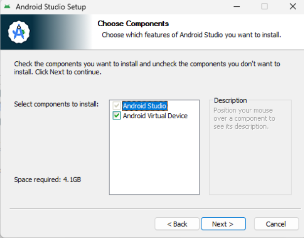
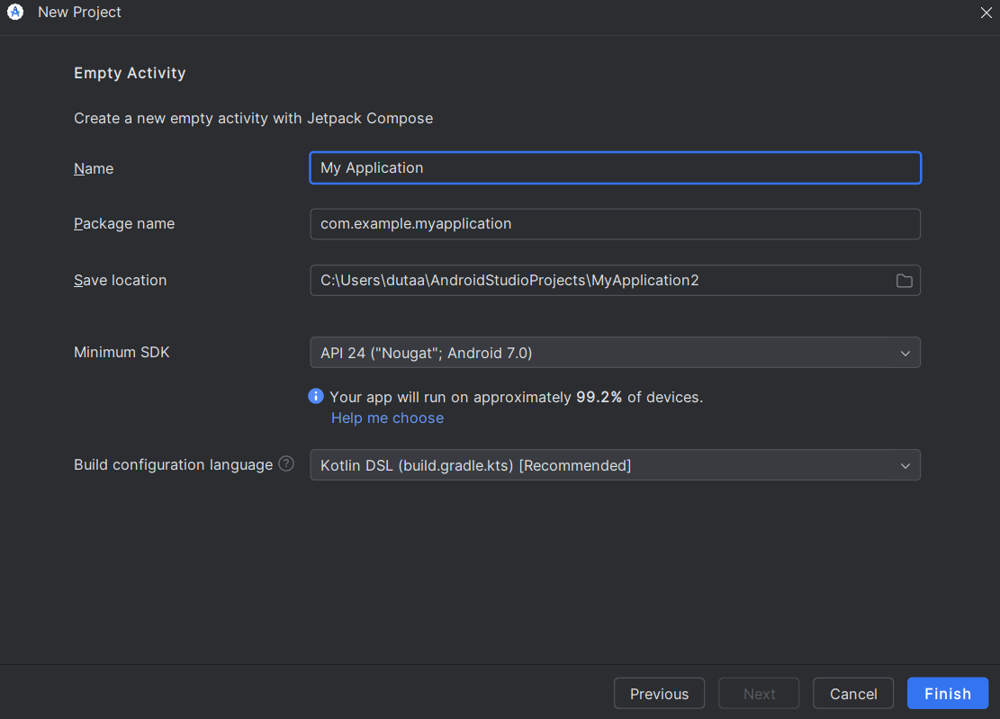

Instalasi Android Studio
Persiapan Sebelum Instalasi
Sebelum memulai instalasi Android Studio di Windows atau sistem operasi lainnya, ada beberapa hal penting yang harus anda siapkan untuk memastikan proses berjalan lancar:
1. Spesifikasi Minimum Laptop/PC
Agar Android Studio bisa berjalan dengan lancar dan optimal, berikut adalah spesifikasi minimum yang disarankan:
- Sistem operasi: Windows 10/11 (64-bit), macOS (Chip Intel/Apple Silicon), atau Linux
- RAM: Minimal 8 GB (sangat disarankan 16 GB untuk performa optimal)
- Penyimpanan: Minimal 8 GB ruang kosong (lebih disarankan menggunakan SSD untuk kecepatan)
- Prosesor: Intel Core i5 / AMD Ryzen 5 atau lebih tinggi
- Resolusi layar: Minimum 1280 x 800 pixels
2. JDK (Java Development Kit)
Android Studio membutuhkan Java untuk menjalankan environment-nya. Kabar baik: Sejak beberapa versi terakhir, JDK sudah disertakan otomatis saat instalasi Android Studio, jadi anda tidak perlu menginstal secara terpisah.
3. Koneksi Internet Stabil
Selama proses instalasi dan konfigurasi SDK, Android Studio akan mengunduh berbagai komponen penting (total sekitar 2-3 GB). Pastikan anda memiliki koneksi internet yang stabil agar proses berjalan lancar tanpa gangguan.
Ikuti langkah-langkah berikut dengan teliti untuk instalasi yang sukses. Proses lengkap memakan waktu sekitar 20-30 menit tergantung kecepatan internet dan spesifikasi PC anda.
1 Download Android Studio
Langkah pertama adalah mengunduh installer Android Studio dari situs resmi. Buka browser favorit anda (Chrome, Edge, atau Firefox).
Kunjungi situs resmi Android Studio:
https://developer.android.com/studio
- Klik tombol Download Android Studio yang berwarna hijau
- Setujui persyaratan dan ketentuan layanan (Terms and Conditions)
-
Download file installer
.exeuntuk Windows (ukuran sekitar 1-2 GB) - Simpan file di lokasi yang mudah anda temukan
2 Jalankan Installer Android Studio
Setelah file selesai diunduh, buka file
android-studio-setup.exe yang
telah anda download.
Pastikan anda login sebagai Administrator atau klik kanan file installer dan pilih "Run as Administrator" untuk menghindari masalah permission.
Akan muncul jendela awal instalasi Android Studio. Klik Next untuk melanjutkan ke langkah berikutnya.
3 Pilih Komponen Instalasi
Pada menu Choose Components, anda akan melihat beberapa pilihan komponen yang akan diinstal. Pastikan kedua opsi berikut tercentang:
-
Android Studio
IDE utama untuk development aplikasi Android -
Android Virtual Device (AVD)
Emulator untuk testing aplikasi Android tanpa device fisik
Setelah memastikan keduanya tercentang, klik Next untuk melanjutkan.
4 Pilih Lokasi Instalasi
Pilih folder tempat Android Studio akan dipasang. Lokasi default biasanya sudah optimal dan direkomendasikan:
C:\Program Files\Android\Android Studio
Setelah memilih lokasi, klik Next, kemudian klik Install untuk memulai proses instalasi.
Pastikan drive anda memiliki ruang kosong minimal 8 GB untuk instalasi lengkap. Jika ruang tidak cukup, pilih drive lain dengan ruang yang memadai.
Tunggu hingga proses instalasi selesai. Proses ini memakan waktu beberapa menit tergantung spesifikasi PC anda. Anda akan melihat progress bar yang menunjukkan perkembangan instalasi.
5 Instalasi Selesai
Setelah proses instalasi selesai, akan muncul jendela konfirmasi bahwa Android Studio telah berhasil diinstal.
Centang opsi "Start Android Studio" jika anda ingin langsung membuka Android Studio setelah mengklik Finish. Kemudian klik Finish untuk menyelesaikan proses instalasi.
6 Setup Awal Android Studio
Saat pertama kali membuka Android Studio, anda akan melihat wizard konfigurasi awal. Ini adalah langkah penting untuk menyiapkan environment development anda.
- Import Settings: Pilih "Do not import settings" (karena ini instalasi pertama kali)
- Data Sharing: Pilih apakah ingin berbagi data usage dengan Google (opsional)
- Pilih Tema: Pilih Light atau Dark theme sesuai preferensi anda
- Tipe Instalasi: Pilih Standard (recommended untuk pemula) - ini akan menginstal semua komponen yang paling umum digunakan
- Verify Settings: Review konfigurasi yang akan diinstal (SDK, AVD, dll)
- Klik Finish - Android Studio akan mulai mengunduh SDK, platform tools, emulator system images, dan komponen lainnya
Proses download SDK dan komponen lainnya memerlukan koneksi internet yang stabil dan bisa memakan waktu 10-20 menit tergantung kecepatan internet anda. Jangan tutup aplikasi sampai proses selesai!
7 Instalasi Selesai - Siap Digunakan!
Setelah semua proses selesai, anda akan dibawa ke tampilan utama Android Studio Welcome Screen. Selamat! Android Studio sudah siap digunakan untuk membuat aplikasi Android anda yang pertama.
Pada Welcome Screen, anda akan melihat beberapa opsi seperti "New Project", "Open", dan "Get from VCS". Ini menandakan instalasi berhasil dan anda siap untuk membuat project pertama!
Sekarang saatnya membuat aplikasi Android pertama anda! Ikuti langkah-langkah berikut untuk membuat project HelloWorld yang sederhana namun fungsional.
8 Buat Project Baru
Dari Android Studio Welcome Screen, ikuti langkah berikut:
- Klik tombol "New Project" yang besar di tengah layar
- Anda akan melihat jendela dengan berbagai template project
- Pilih tab "Phone and Tablet" (biasanya sudah aktif secara default)
- Pilih template "Empty Activity" - ini adalah template dasar dengan Jetpack Compose (Modern UI toolkit dari Google)
- Klik Next untuk melanjutkan
Tutorial ini menggunakan Empty Activity dengan Jetpack Compose yang merupakan pendekatan modern untuk membuat UI Android. Alternatif lain adalah Empty Views Activity jika anda ingin menggunakan XML tradisional.
9 Konfigurasi Project
Pada halaman konfigurasi project, isi detail sebagai berikut:
-
Name:
HelloWorld
Nama aplikasi yang akan muncul di device -
Package name:
com.example.helloworld
Identifier unik untuk aplikasi anda -
Save location: Pilih folder tempat project
akan disimpan
Disarankan di folder khusus untuk project Android anda -
Language:
Kotlin
Bahasa pemrograman resmi untuk Android (modern dan recommended) -
Minimum SDK:
API 24 (Android 7.0 Nougat)
Versi Android minimum yang didukung (~94% devices)
Setelah mengisi semua field, klik Finish untuk membuat project.
Android Studio akan membuat project dan melakukan Gradle sync (proses build system). Ini memakan waktu beberapa menit untuk project pertama karena akan mengunduh dependencies yang diperlukan.
10 Mengenal Struktur Project
Setelah Gradle sync selesai, anda akan melihat struktur project di sebelah kiri. Berikut adalah file-file penting:
- app/java/com.example.helloworld/MainActivity.kt - File utama tempat kode aplikasi anda
- app/res/values/strings.xml - File untuk menyimpan teks/string
- app/manifests/AndroidManifest.xml - File konfigurasi aplikasi
- build.gradle.kts - File konfigurasi build system
11 Edit dan Jalankan Aplikasi
Buka file MainActivity.kt. Anda
akan melihat kode dasar dengan Jetpack Compose:
class MainActivity : ComponentActivity() {
override fun onCreate(savedInstanceState: Bundle?) {
super.onCreate(savedInstanceState)
setContent {
HelloWorldTheme {
Surface(
modifier = Modifier.fillMaxSize(),
color = MaterialTheme.colorScheme.background
) {
Greeting("World")
}
}
}
}
}
@Composable
fun Greeting(name: String, modifier: Modifier = Modifier) {
Text(
text = "Hello $name!",
modifier = modifier
)
}Menjalankan Aplikasi:
- Klik tombol Run (segitiga hijau) di toolbar atas
- Pilih device target: Emulator (AVD) atau device fisik yang terhubung
- Jika menggunakan emulator untuk pertama kali, klik "Create Device" dan pilih device seperti Pixel 6
- Tunggu aplikasi ter-build dan berjalan di device
Anda telah berhasil membuat dan menjalankan aplikasi Android pertama anda! Aplikasi akan menampilkan teks "Hello Android!" di layar. Ini adalah awal dari perjalanan anda sebagai Android developer.
12 Langkah Selanjutnya
Sekarang anda sudah memiliki environment yang siap, berikut adalah saran untuk melanjutkan pembelajaran:
- Pelajari Kotlin: Bahasa pemrograman untuk Android development
- Pelajari Jetpack Compose: Modern toolkit untuk membuat UI
- Eksplorasi Android Components: Activity, Fragment, ViewModel, dll
- Praktik membuat aplikasi sederhana: To-do list, calculator, weather app
- Ikuti tutorial resmi: Android Developers Training